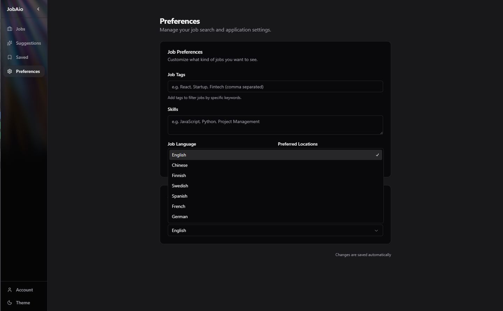
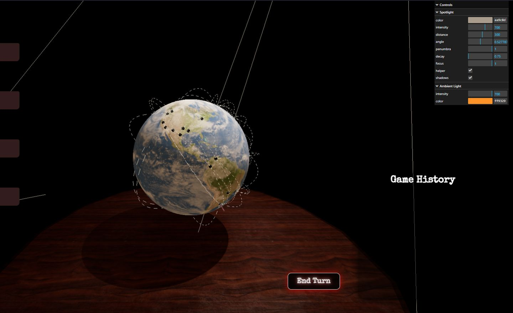

Muita projekteja
Viisi muuta projektia ja kokeilua. Avaa rivi nähdäksesi työn, linkit ja oman panokseni.
05JobAIEnnustaminen · valmis
09/2026Pääasiallinen tekijä — 95 / 128 committia, neljän hengen tiimi
Suomen avointen työpaikkojen ennustaminen yhden, kahden ja neljän neljänneksen päähän virallisesta datasta, ja lainatut tiedotteet selittävät jokaisen tuloksen. Rakensin haku- ja validointiputken, jossa jokaisella ajolla on jäljitettävät datavedokset. Meidän Qwen3-4B-adapterimme, joka on koulutettu 151 727 esimerkillä, voitti jokaisen vertailumenetelmän yhden ja kahden neljänneksen päässä, mutta ei neljän. Se on kehityksenaikainen vertailu eikä käyttöönottotakuu, ja neljän neljänneksen tulos raportoidaan sellaisena kuin se tuli.
Lue tekninen muistiinpano ↗- Python
- Jupyter
- StatFin PxWeb
- Time-series forecasting
- LoRA / QLoRA
- Qwen
- Unsloth
- transformers
- PEFT
- TRL
- RAG
- Prophet
06JobAioTyöpaikkakooste · tiimiprojekti
10/2025 — presentPääkehittäjä ja Scrum Master — 258 / 381 committia, viiden hengen tiimi
Suomen työmarkkinoiden scraper ja koostepalvelu, joka kerää ilmoituksia useasta lähteestä tekoälyavusteisella analyysillä. Rakennettu monorepona. Vastasin tiimin Scrum-prosessista kehitystyön ohella.
- TypeScript
- Node.js
- React
- Bun
- Python
- Docker
- Web Scraping
- REST

Sovelluksen käyttöliittymä · asetukset ja kielisuodatus 07MoneyMovesUnity-peli · Junction 2025
11/2025Unity- ja backend-kehittäjä — Junction 2025
Selainpohjainen 3D-talousopetuspeli, joka rakennettiin Junction 2025 -hackathonissa kahden hengen tiimissä. Työskentelin pelimekaniikkojen ja backend-integraation parissa, mukaan lukien ShaderLab- ja HLSL-varjostimet.
- C#
- Unity
- ShaderLab / HLSL
- Firebase
- Google Cloud

Julkaistu versio · Unity 3D -kaupunki ja juokseva saldo 08Airport SimulationDiskreettitapahtumasimulaatio
09/2025 — 10/2025Pääkehittäjä — 157 / 271 committia, neljän hengen tiimi
Java-pohjainen diskreettitapahtumasimulaatio lentoaseman toiminnasta graafisella käyttöliittymällä. Rakensin simulaatiomoottorin ja backendin tiimin aktiivisimpana committaajana.
- Java
- Discrete-event simulation
- JavaFX
- Git
09Drakula‑v2Moninpelattava 3D-peli
12/2024 — 03/2025Pelimekaniikat — 91 / 305 committia, neljän hengen tiimi
Full-stack-moninpeli, 3D-kauhulautapeli FastAPI-backendillä ja Three.js-renderöinnillä. Pääosin backend-työtä, neljästä tekijästä toiseksi aktiivisimpana.
- Python
- FastAPI
- Three.js
- Vite
- MariaDB

Pelinäkymä · Three.js-maapallo ja lentoreitit